My papers, in plain language
One short article for each of my papers, plus the talks and the dataset of the LANCER project: what problem we tackled, what we did, what we found. No background in machine learning needed.
35 articles
2026
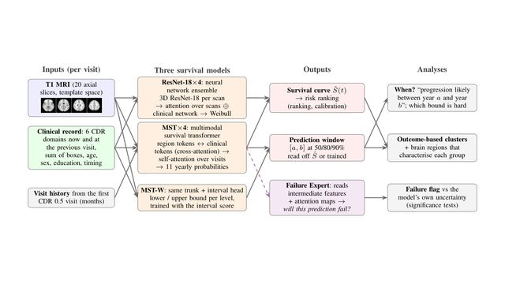
Predicting when mild cognitive impairment may become dementia, as a window of years
Instead of one guessed date, we predict a window of years for when mild cognitive impairment may progress to dementia, using brain scans and clinical records from 941 people.
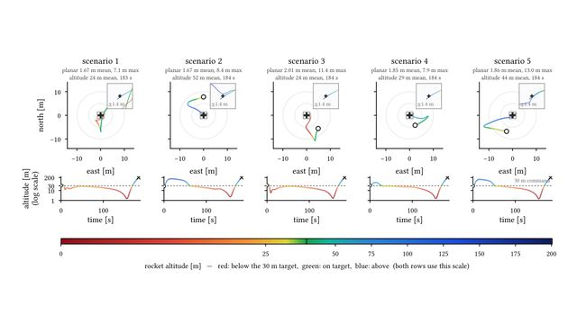
Why a rocket that learned to fly could not learn to hover
A short guide to the RocketSim paper: a learning agent kept a booster upright but could not hold its height, and why. The full write-up is on the LANCER project page.
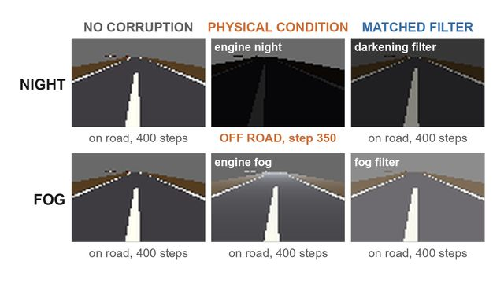
Darkening a photo is not the same as driving at night
A short guide to the post-hoc corruptions paper: a darkening filter and a simulated night look alike but test a driving agent very differently. Full write-up on the LANCER page.
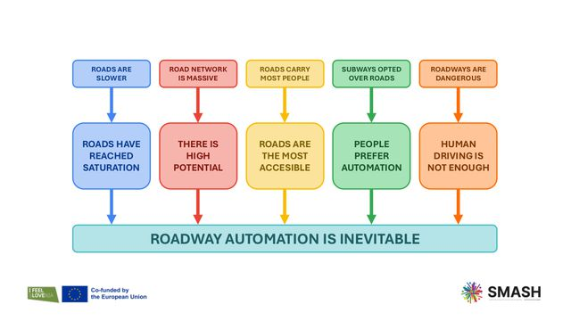
Why the road is next: a research talk on autonomous driving and LANCER
A walk through my LANCER research talk: why roads come first for automation, what a self-driving car senses, where the gaps are, and why we train driving agents with rewards in simulation.
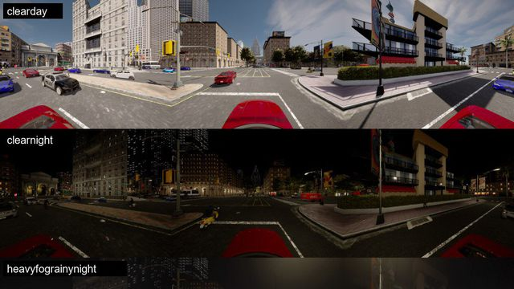
One drive, many kinds of weather: the LANCER driving dataset
The first dataset tool from LANCER: a CARLA pipeline that drives one route under many weather conditions and records RGB, depth, semantic and LiDAR views from three angles. Code and samples are on the LANCER page.
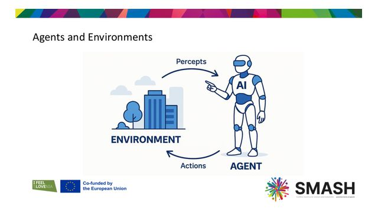
Teaching a car to learn from reward: a student seminar on reinforcement learning
A tour of my student seminar: what learning means, the maths of reinforcement learning, how to choose an algorithm, and how the ideas apply to driving in simulation. Slides and write-up are on the LANCER page.
2025
2024
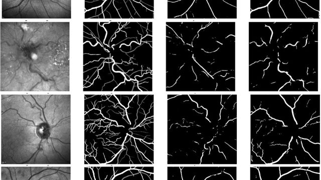
Using a vessel mask as a hint to tell arteries from veins in eye scans
RavNet uses two U-Nets in a row. The first finds where the vessels are, and the second uses that map to label arteries and veins separately in infrared scans of the retina.
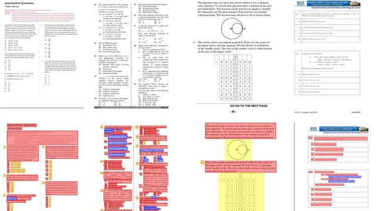
A small dataset for teaching computers to take exam questions apart
We built MADS, 230 labelled pages of competitive-exam questions, and tested two object detectors on finding text, equations, numbers and images on each page.
2023
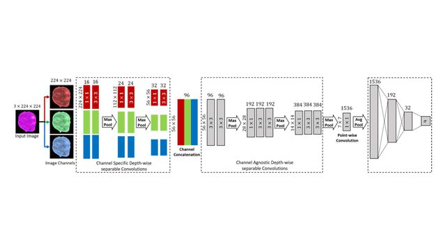
A small neural network that spots leukemia cells with a fifth of the parameters
A small multi-column network tells leukemia cells from healthy ones in microscope images, matching a much larger ensemble to within 1.3 accuracy points while using about a fifth of its parameters.
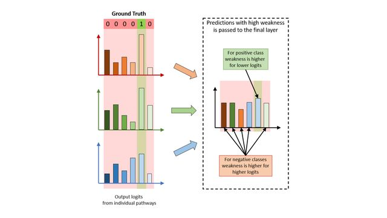
Training a network by repairing its weakest branch first
When a network has several branches that each score the classes, the usual trick is to average the scores. We tried sending the learning signal only through the weakest branch for each class, and it helped.
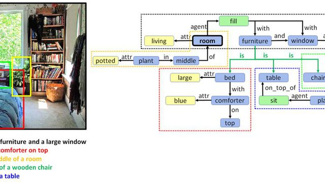
Turning a photo into a graph of what is in it, without training on graphs
A rule-based pipeline that turns the captions of many small image regions into one scene graph of objects, actions and attributes, with no graph labels needed for training.
2021
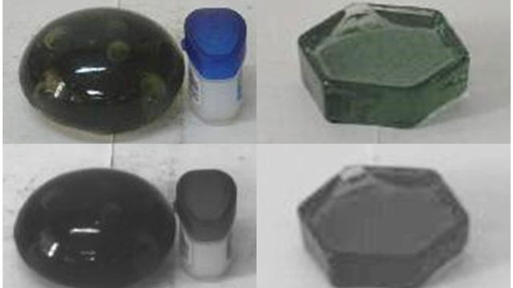
A photo collection of desk objects in visible, near-infrared and thermal light
We photographed 25 desk objects, alone and in pairs, with three cameras that see visible, near-infrared and thermal light, and released 7,800 roughly aligned images with labels and benchmark results.
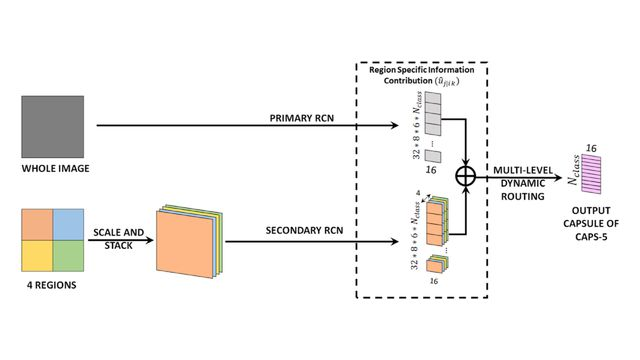
Letting small image regions negotiate before a capsule network decides
Many image classifiers are committees of small networks that vote. We built a capsule network where the committee members, each seeing a piece of the picture, first agree with each other and then decide.
2020
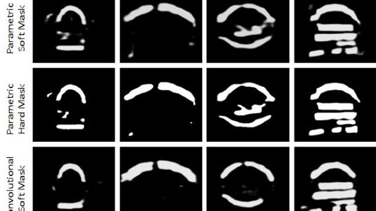
Finding text in street photos by letting the network weigh its own shortcuts
A segmentation network that marks which pixels of a street photo are text. Weighted shortcuts between its layers and a vote across three window sizes beat SegNet, U-Net and PSPNet on four public datasets.
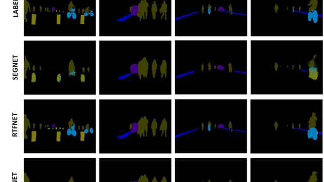
Using heat images to sharpen street-scene segmentation at night
After dark, ordinary cameras struggle to separate people and objects. We paired a small colour-plus-thermal network with a clean-up step guided by thermal images, and it scored highest on night scenes.
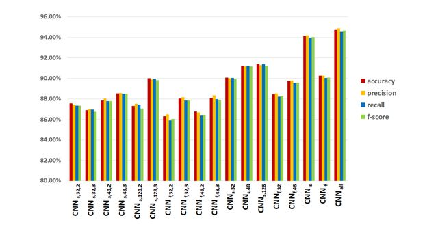
Letting neural networks pick the features for telling handwritten Indian scripts apart
Instead of hand-designing features, ten small neural networks learn them from images of handwritten words. Fed to a simple classifier, they identified eleven Indian scripts with 94.73% accuracy.
2019
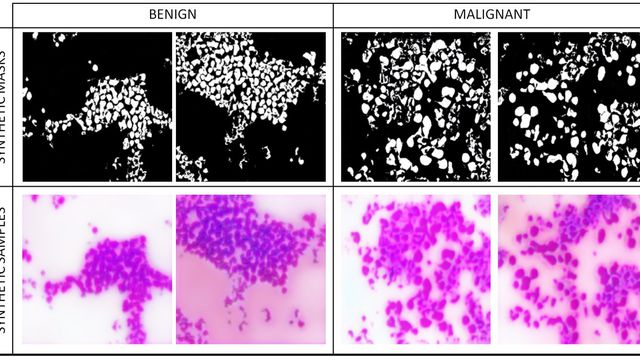
Making synthetic cell images to help a classifier learn from only 150 pictures
With only 150 microscope images to learn from, three image classifiers did better after we added synthetic cell images drawn by a two-stage GAN pipeline that starts from simple black-and-white masks.
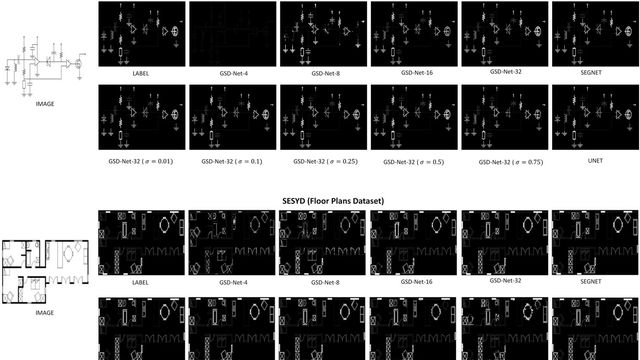
Finding symbols in circuit diagrams and floor plans with a very small network
A segmentation network that labels every pixel of a circuit diagram or floor plan, using under 1% of the parameters of SegNet and U-Net while keeping nearly the same pixel accuracy.
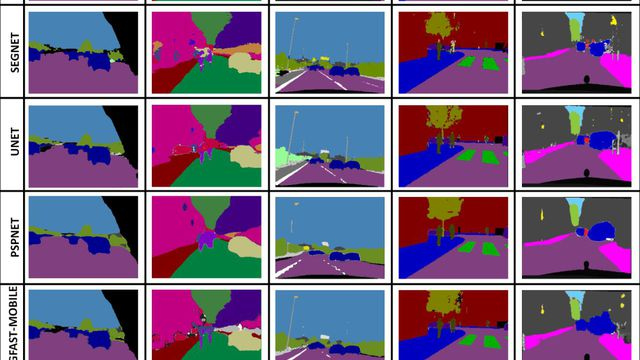
A street-scene segmenter with about 600,000 parameters instead of tens of millions
SegFast-V2 labels every pixel of a street photo with about 600,000 parameters, where SegNet uses 29 million. On a CPU a forward pass takes 0.360 s against 1.98 s for SegNet, with accuracy close to the larger models.
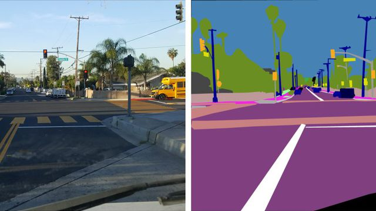
A plain-language tour of how deep networks learned to label every pixel
A survey that explains why deep-learning segmentation methods are built the way they are, from FCN and U-Net to GANs, weak supervision and tiny networks, with simple diagrams in one common format.
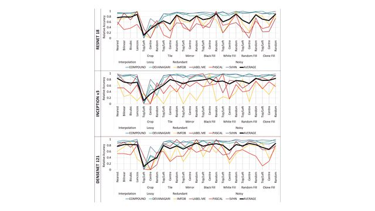
Cropping is the worst way to make a photo square for a neural network
Most image networks want square pictures of one fixed size. We trained 450 networks to compare 25 ways of squaring up a photo, and found that cropping, the usual choice, did worst.
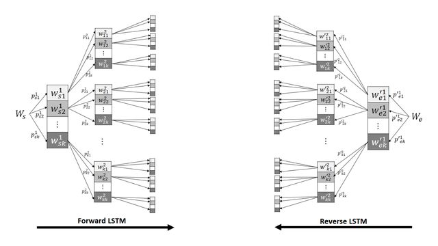
Turning a few keywords into a sentence with two word predictors that meet in the middle
Given only a few keywords, such as the objects and places in a photo, how do you get a fluent sentence? We trained two word predictors, one reading forwards and one backwards, and matched their guesses.
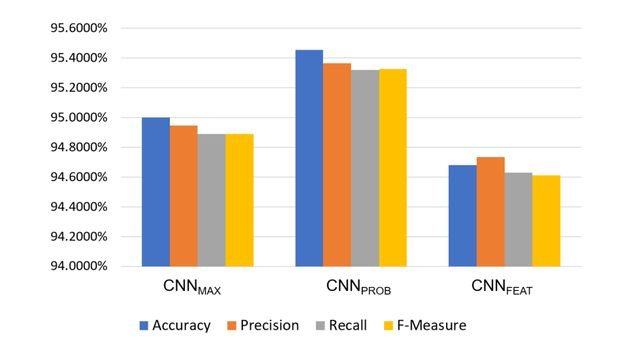
Telling eleven handwritten Indian scripts apart with a team of small neural networks
Which of eleven Indian scripts is a handwritten word written in? A team of small networks, each trained on a modest GPU, answered correctly about 95% of the time on a public word dataset.
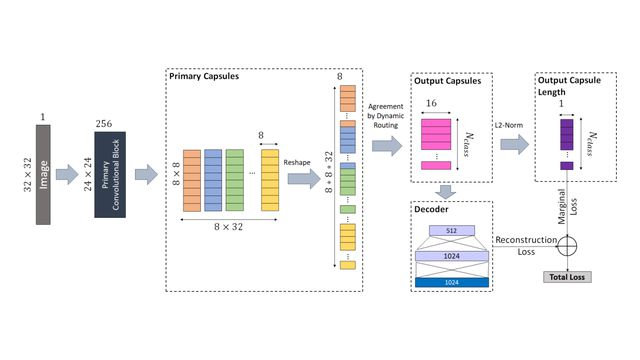
Making capsule networks cope with hundreds of classes
Capsule networks get slow and memory-hungry as the number of classes grows. We changed what their routing step produces, which cut training time and raised accuracy on 199-class handwritten Bangla characters.
2018
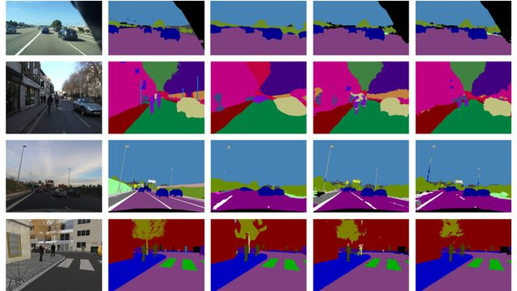
A small segmentation network that runs in under half a second on a CPU
SegFast labels every pixel of a street scene with about 49 times fewer parameters than SegNet, and runs about 5.1 times faster on a plain CPU, with accuracy comparable to SegNet's.
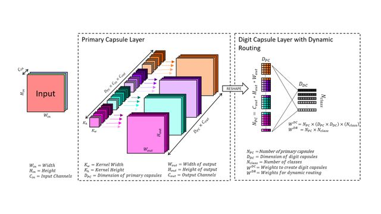
Capsule networks learn handwritten Bangla, Devanagari and Telugu quickly, and make AlexNet a little better
We tested capsule networks on handwritten digits and characters in three Indian scripts. They beat LeNet on all five datasets, learned faster than LeNet and AlexNet, and improved AlexNet when combined with it.
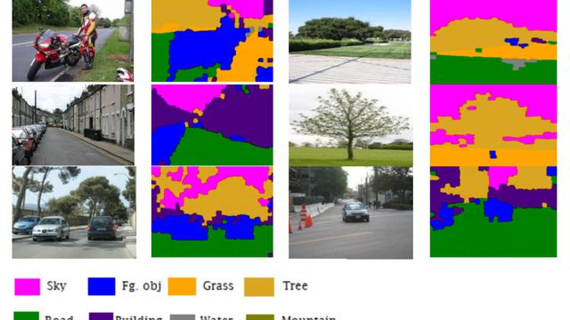
Labelling a scene by looking at small patches and their neighbours
We label outdoor scenes by classifying superpixels (small patches of similar pixels) with their neighbours. Three small networks combined reached 77.14% accuracy on ICCV09, in 25 to 30 ms of testing time.
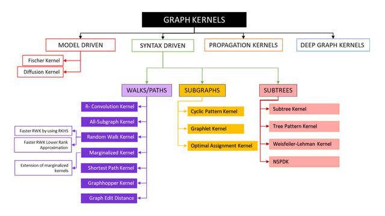
How computers learned to compare networks: a twenty-year tour of graph kernels
A survey of graph kernels, the methods that let a machine-learning model say how similar two networks are. We follow the idea from its start in the late 1990s to the deep-learning era.
2016
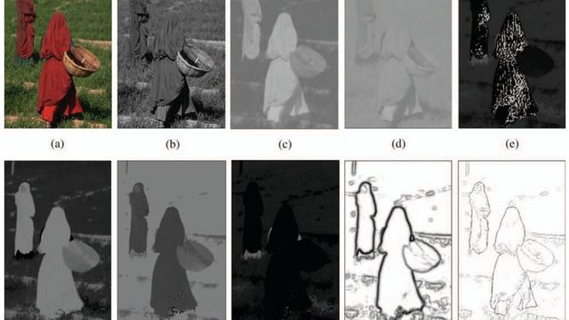
Finding object outlines in photos by combining seven cues and superpixels
A contour detector that looks at seven views of an image and uses superpixels to throw out false edges. On BSDS300 it came second in average precision, and the paper reports it runs much faster than the leader.
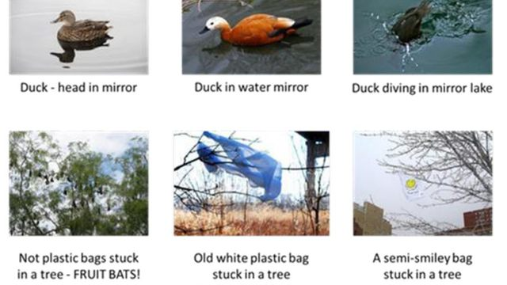
Finding similar photos by comparing the meaning graphs of their captions
We turned photo captions into graphs of objects, properties and relations, then retrieved similar photos by comparing the graphs. Human judges rated the best match 2.95 out of 4 on average.
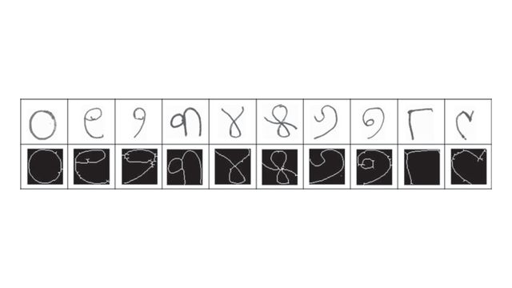
Recognising handwritten Oriya digits by comparing skeleton graphs
We turned handwritten Oriya digits into small graphs and recognised them by how much each graph overlaps with training examples. The method reached 97.64% accuracy on 2200 test images.
2014
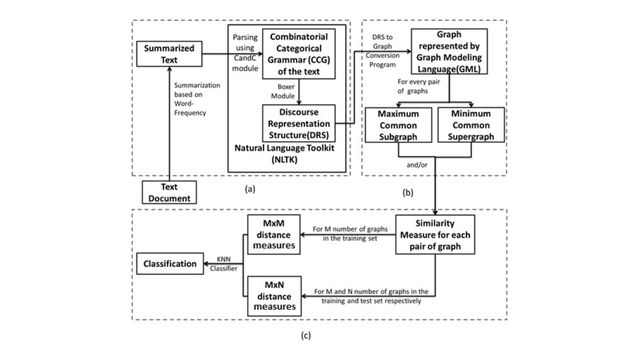
Mixing meaning graphs with word counts lifted text classification to 56%
Meaning graphs matched word counting on 20 Reuters topics. Averaging the two methods' votes did better than either alone, reaching up to 56.00% accuracy.
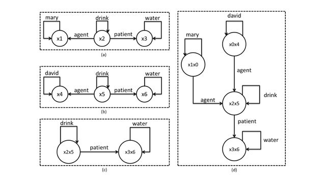
Judging how close a paragraph is to a sentence by comparing meaning graphs
Our entry in a 2014 shared task on comparing texts of different sizes. We turned each text into a meaning graph and let a nearest-neighbour model turn graph distances into a similarity score.
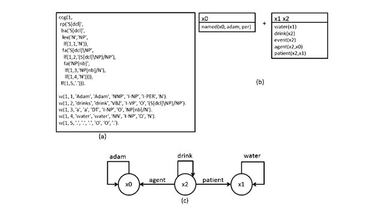
Turning news summaries into meaning graphs to sort them by topic
We turned short news summaries into graphs of who did what to whom, compared five ways of measuring graph distance, and found they sort Reuters stories about as well as plain word counting.
Each article is dated to when its paper appeared, not to the day it was written here. The papers themselves are listed, with links, on the publications section of the home page.